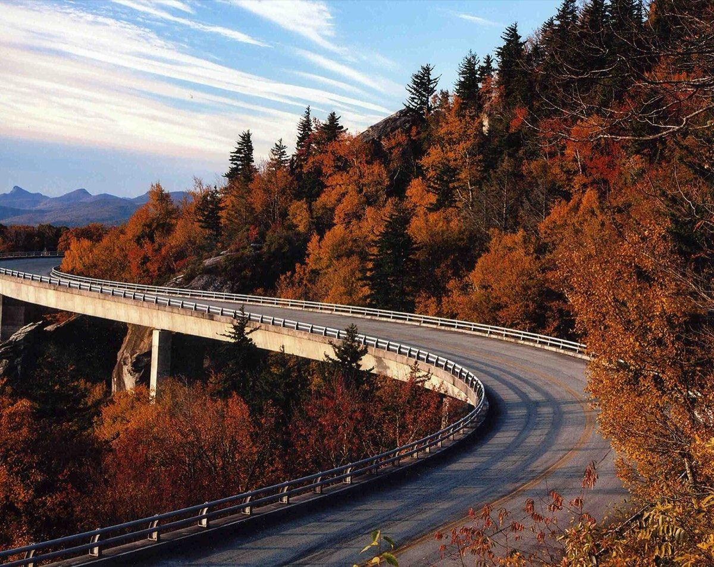
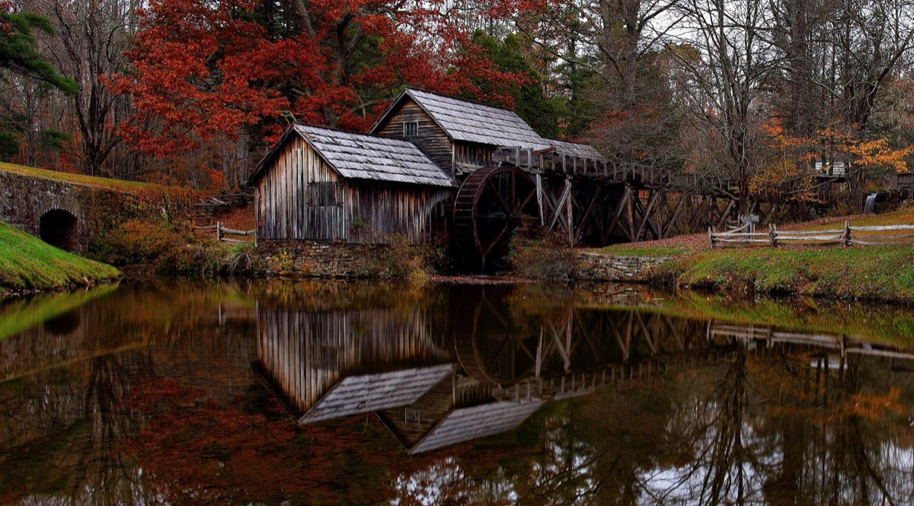
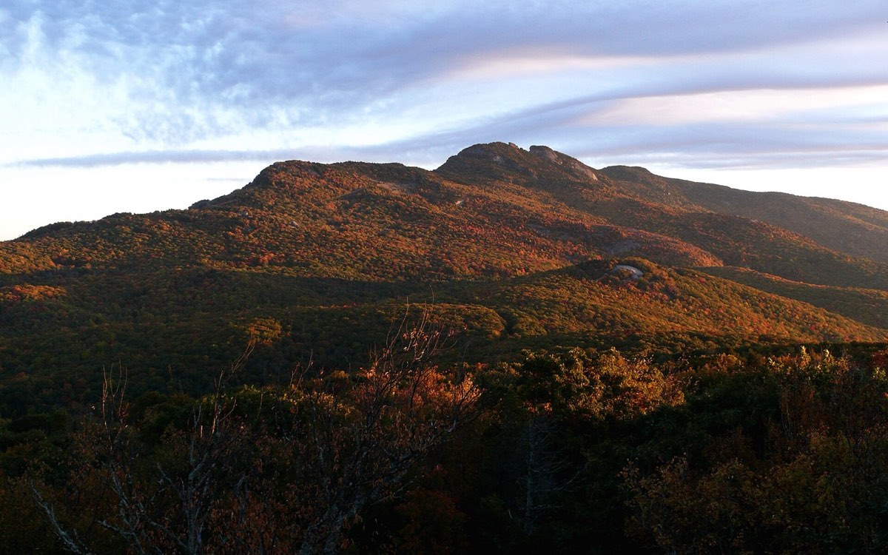
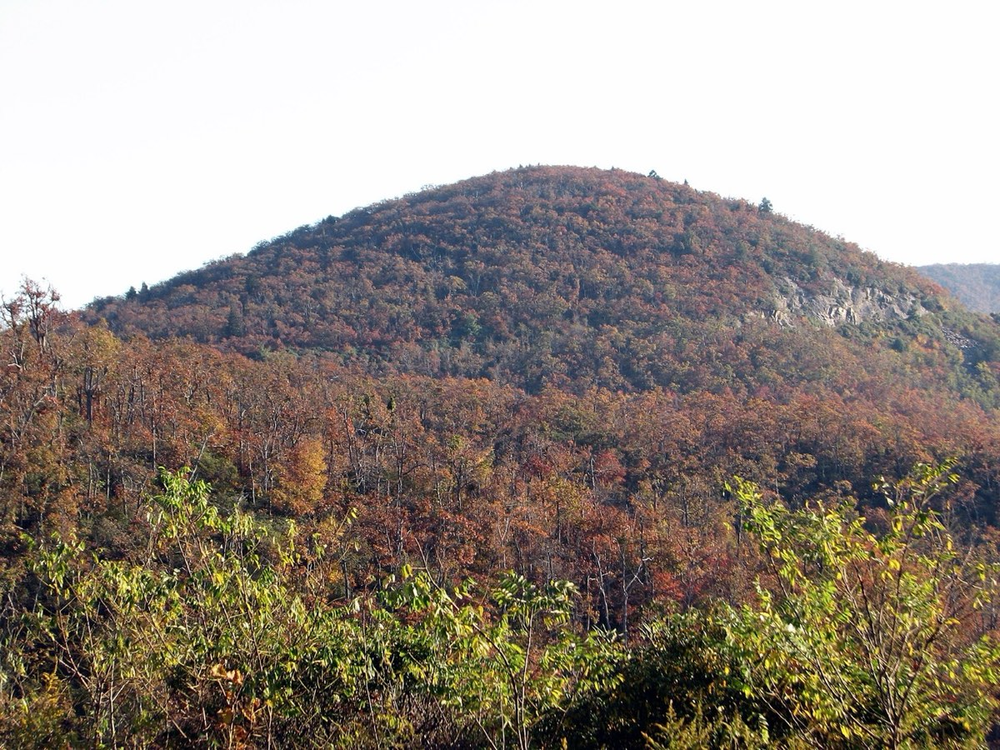

Ease into the hills
Meet in Charleston around 2pm. A late-afternoon departure leaves the daylight sightseeing for Monday. Greenville is a comfortable first chapter.
CHARLESTON, SC → ROANOKE, VA
A little city time, a waterfall detour, and a few slow days in the Blue Ridge. An economical November escape, with a different place to wake up each day.
Explore your five days ↗Spend Sunday night in Greenville, Monday in Asheville, Tuesday around Boone / Blowing Rock, and Wednesday in Floyd. Reach Roanoke Thursday. You get variety without making the first evening a marathon.
THE FEEL OF THE TRIP
Meet in Charleston around 2pm. A late-afternoon departure leaves the daylight sightseeing for Monday. Greenville is a comfortable first chapter.
The Parkway is a scenic outing, not the whole transport plan. Use regular highways around closures and save mountain driving for daylight.
Simple hotels, included breakfasts and free viewpoints keep room for a local gig, a good meal, or a more characterful night in Floyd.
Planning estimate assumes two adults sharing one room and one car. Rounded car + lodging planning range: $1,200–1,500 (component range $1,167–1,463). Rental offers are dated observations; lodging is estimated. The combined range is not a bookable package; excludes fuel, meals, admission, optional rental protection and personal extras. Prices and operating conditions require final confirmation.
CHAPTER ONE · THE ROUTE
The expected route keeps the first evening manageable, puts the mountain scenery into daylight hours, and reaches Roanoke on Wednesday night.
CHAPTER TWO · WHERE TO STAY
Four nights, one shared room. These are shopping targets with a tax cushion, not confirmed rates or inventory. Compare the refundable total, not just the headline price.
$395–565 with Oak Haven in Floyd, or $410–600 with Hotel Floyd. One shared room for Nico and Emily; no Thursday night included.
Keep the mountain nights refundable if possible. Tell Sunday’s hotel you may arrive late. Confirm one bed versus two, the final tax-inclusive total, parking, breakfast and the cancellation deadline. For a more settled trip, stay in Asheville Nov 8–10, Boone Nov 10–11, and Roanoke Nov 11–12 instead.
CHAPTER THREE · THE CAR
Three dated rental offers, from Charleston airport to Roanoke airport. The smallest car is not the cheapest here: the compact is $91 more than the lowest SUV offer.
Sunday, November 8 · 4pm
Thursday, November 12 · 4pm provisional
Compare CHS airport → ROA airport with downtown branches only where Sunday hours and one-way returns work. Match the return time to pickup to avoid an extra rental day. Require unlimited mileage, confirm the one-way charge, driver-age rules and additional-driver cost.
Dated Expedia offers show Alamo and Enterprise Jeep Wrangler Unlimited or similar at $772, and an Alamo Nissan Versa compact or similar at $863. These displayed totals include taxes, fees and drop charge, with unlimited mileage. Optional coverage and fuel are extra. Nico’s age 30 was used; Thursday 4pm return is provisional; the cancellation cutoff has not been checked.
Use the same pickup and return times, car class and driver details. Check taxes, airport fees, drop charges, mileage and cancellation rules. Rental protection is a separate choice: review your existing coverage before selecting it. A one-way car is useful only if the specific Roanoke branch accepts the return.
CHAPTER FOUR · THINGS TO DO
Pick one main outdoor stop each day and leave space for a town wander. These are suggestions, not a promise of November access.
CHAPTER FIVE · WHAT’S ON
Dated events and recurring leads are clearly separated. Pick one evening plan; don’t rush the drive to make a ticket.
Research checked November 2, 2026. Listed prices are per person. Availability can change. Food, drink and any unlisted checkout charges are extra. No tickets or reservations have been purchased.
CHAPTER SIX · THE MOUNTAINS
The Blue Ridge is the eastern front of the southern Appalachians, a band of ancient rock running from Pennsylvania to Georgia. You’ll cross it at its widest and highest, in the week the color slides off the ridges and settles into the valleys.



In 2026 the high Parkway peaked in mid-to-late October and will be mostly bare. The best color of the trip is likely lower down: Greenville, the climb to Brevard, the Asheville valley, the I-40 / US-221 foothills on Tuesday and the Roanoke Valley at the end. Bare ridges also open the longest views of the year.
THE FOLIAGE CALENDAR · SC · NC · VA
Peak arrives about a week earlier for every 1,000 ft of elevation, and earlier again the farther north you go. Select a band to see what it should look like on your day there.
Scroll sideways for later weeks →

Planning estimates, not observations. The 2026 row values interpret dated reports: Explore Asheville (week of Oct 26), WLOS (Oct 23 update), Virginia State Parks (Oct 29) and Howard Neufeld’s heat-delay forecast. “A typical year” applies the App State elevation rule. Weather, wind and rain can strip leaves within days. Check the live reports linked under Sources before each drive.
YOUR ROUTE, IN PROFILE
The expected route climbs from sea level to about 4,200 ft and ends in Roanoke under 1,000 ft. Line color shows the expected 2026 foliage stage on each leg. Larger dark dots are overnight stops; select any stop for details.
THE BLUE RIDGE PARKWAY
America’s longest linear park links Shenandoah to the Great Smokies with no stoplights, no billboards and no trucks. It took 52 years to build. You’ll drive two short, open stretches. Treat everything else as a view, not a road plan.
WHY IT LOOKS LIKE THIS
Much of the Blue Ridge core is gneiss and granite more than a billion years old. The range was pushed up again when Africa collided with North America roughly 300 million years ago. Since then erosion has worn it down into the rounded, forested ridges you see now.
Forests give off isoprene and other compounds that scatter blue light. That makes the stacked, fading ridgelines in every overlook photo. In cold November air the haze thins, so far ridges look sharper.
On the Carolina border the Blue Ridge Escarpment rises about 2,000 ft over a few miles. Air forced up it drops some of the heaviest rain in the eastern US. That feeds the temperate rainforest, rhododendron thickets and waterfalls around Brevard.
NATURE ALONG THE ROUTE
Each card says where on your route to look for it. None of these is an extra stop; they’re for the windows, the overlooks and the short walks you’re already taking.
CHECK BEFORE YOU GO
Research checked November 3, 2026. Foliage stages, mileages and elevations are approximate planning aids. Photographs come from Wikimedia Commons, show different years and seasons, and are not live conditions. Per-photo sources and licenses are in assets/photo-credits.json.